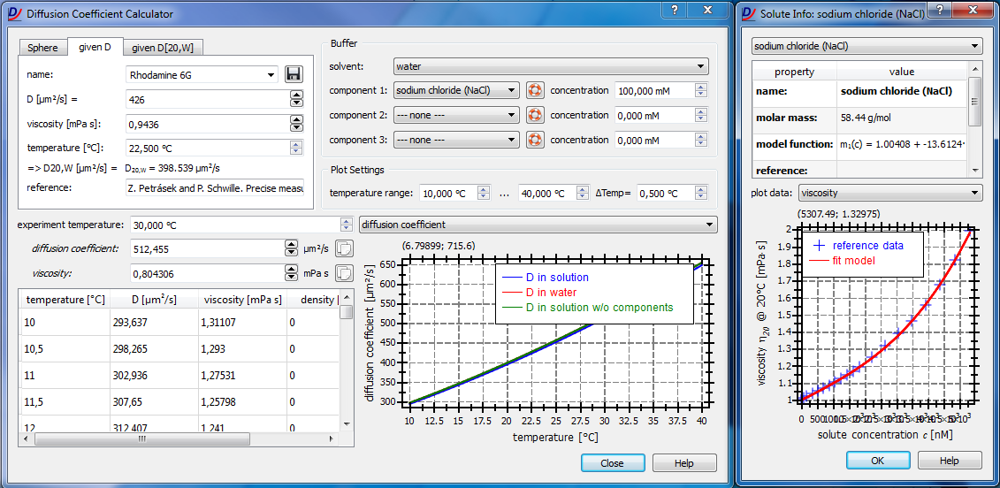
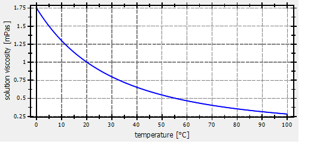

$$qf_commondoc_header.start$$ $$qf_commondoc_header.end$$
Description & Usage
This plugin allows to calculate the diffusion coefficient of a sample in a given solution. Simply select the sample on the left and the solution on the right. The table and graph will show the solution properties and the diffusion coefficient over the specified temperature range (0°C...100°C max).
Using the plugin is simple:
- To open the plugin window, click on "Tools|Diffusion Coefficient Calculator". The plugin main window looks like this:

- It may also be possible that other plugins have buttons to show this window (e.g. in the focal volumne calibration of the default FCS plugin). If you started this tool from one of the later, you may usually take over a value (e.g. the diffusion coefficient) from the tool into your plugin, by double-clicking the value in the table or by clicking
 .
.
- Now you can select the reference data for the diffusion coefficient you want to calculate in the tabs at the top-left corner. You may estimate the diffusion coefficient $$math:D$$ for a sphere, or if $$math:D_{\eta,T}$$ at a certain temperature $$math:T$$ and viscosity $$math:\eta$$ is known. In the "given D" tab you may enter the parameters $$math:D_{\eta,T}$$, $$math:\eta$$ and $$math:T$$ or select them from a database issued together with QuickFit. It is also possible to extend this database, by clicking
 after you entered all data and a name for your molecule. Note that the additional data will be saved in your local configuration directory, so if you feel that you have some D-data that should be part of QuickFit, please send it to the authors. In the tab "Sphere" you may enter the hydrodynamic radius of a sphere and in the tab "given D[20,W]" you may enter the $$math:D_{20,W}$$ value, i.e. the diffusion coefficient at 20°C in water of you sample.
after you entered all data and a name for your molecule. Note that the additional data will be saved in your local configuration directory, so if you feel that you have some D-data that should be part of QuickFit, please send it to the authors. In the tab "Sphere" you may enter the hydrodynamic radius of a sphere and in the tab "given D[20,W]" you may enter the $$math:D_{20,W}$$ value, i.e. the diffusion coefficient at 20°C in water of you sample.
- In the next step you will have to define your buffer/solution. This can be done in the top right. First choose a solvent (currently only water) and the add several solutes to your buffer (component 1, component2, ...). Solutes may be NaCl, glucose etc. For each solute you also have to specify the molar concentration. By clicking on the help-button next to the component drop-down list, a new window will open where you can view the solute's properties used to estimate the solution/buffer viscosity.
- Finally you can specify the range of temperature values to show in the table and plot below.
- Now the plugin will calculate the solution viscosity and the diffusion coefficient of your sample according to the method described below. The results will be shown in the table at the bottom left and in the graph at the bottom right. In the graph you may select several different plots from the drop-down list above it. If your experiment has specific temperature conditions, you may enter them above the table and read the viscosity and diffusion coefficient for your experiment below that.
Calculating the Diffusion Coefficient
The plugin uses several approximations to calculate the properties (especially the dynamic viscosity $$math:\eta$$) of a solution, which are described in the next section. Then the diffusion coefficient $$math:D$$ may be calculated as follows:
- Sphere of given Diameter $$math:d$$: The diffusion coefficient is given by the relation
$$bmath:D=\frac{k_B T}{6\pi\eta R_0}$$
where $$math:k_B=1.3806488\cdot 10^{-23}\rm{J/K}$$ is the Boltzman constant, $$math:T$$ is the absolute temperature in Kelvin, $$math:\eta$$ is the viscosity of the solution at the temperatur $$math:T$$ and $$math:R_0=d/2$$ is the hydrodynamic radius of the sphere.
- from given $$math:D_{20,W}$$: If the diffusion coefficient in water at the temperature of 20°C=293.15K (viscosity of water at 20°C is $$math:\eta_{20,W}=1.002 \rm{mPa\cdot s}$$) is known ($$math:D_{20,W}$$), this value can be used to calculate $$math:D$$ at any (absolute) tenmperature $$math:T$$:
$$bmath:D=D_{20,W}\cdot\frac{T}{293.15 \rm{K}}\cdot\frac{\eta_{20,W}}{\eta}$$
The same definitions as above apply and this formula may be easily derived using aboves equation for the diffusion coefficient of a sphere.
- from any given diffusion coefficient $$math:D_R$$ at reference conditions $$math:T_R$$ and $$math:\eta_R$$: The same as inthe case of given $$math:D_{20,W}$$:
$$bmath:D=D_R\cdot\frac{T}{T_R}\cdot\frac{\eta_R}{\eta}$$
- An ellipsoid with rotation axis diameter $$math:a$$ and other axes diameter $$math:b$$: The diffusion coefficient is given by the relation [2-5]
$$bmath:D=\frac{k_B T}{6\pi\eta R_e\dot F_t}$$ where $$math:R_e$$ is the equivalent radius of a sphere of the same volume and $$math:F_t$$ is the translational Perrin factor:
$$bmath:R_e=(ab^2)^{1/3}$$
Depending on the axial ration $$math:p=a/b$$ ($$math:\Rightarrow q=1/p$$), the Perrin factor is:
- for a prolate ellipsoid ($$math:p>1$$): $$bmath:F_t=\frac{\sqrt{1-q^2}}{q^{2/3}\cdot\ln\frac{1+\sqrt{1-q^2}}{q}}$$
- for a oblate ellipsoid ($$math:p<1$$): $$bmath:F_t=\frac{\sqrt{q^2-1}}{q^{2/3}\cdot\atan\sqrt{q^2-1}}$$
- A cylinder of diameter $$math:d$$ and length $$math:L$$: The diffusion coefficient is given by the relation [4] (extending older work from [3])
$$bmath:D=\frac{k_B T}{6\pi\eta R_e\dot F_t}$$ where $$math:R_e$$ is the equivalent radius of a sphere of the same volume and $$math:F_t$$ is the translational Perrin factor:
$$bmath:R_e=\left(\frac{3}{2p^2}\right)^{1/3}\cdot\frac{L}{2}$$
$$bmath:F_t=1.0304+0.0193x+0.06229x^2+0.00476x^3+0.00166x^4+2.66\cdot10^{-6}x^7, x=\ln(p)$$
Here the parameter $$math:p$$ is defined as: $$math:p=L/d$$. This approximation is valid for the range $$math:L/d\in[0.01:100]$
- A globular protein of molecular mass $(M)$ (in daltons) with partial specific volume $(v_2=0.73\unit{cm^3/g})$ has a volume of $[V=\frac{v_2\cdot10^{21}\unit{nm^3/cm^3}}{6.022\cdot10^{23}\unit{Da/g}\cdot M]$ Then the hydrodynamic radius can be estimated as $[ R_H=\sqrt[3]{\frac{3V}{4\pi}} ]$
Calculating the Diffusion Coefficient
This plugin also calculates rotational diffusion coefficients $(D_{rot})$ and rotational relaxation times $(\tau_{rot})$ for spheres with a hydrodynamic radius of $(R_H)$$$ref:ERICKSON2009:Erickson, H. P. (2009). Size and shape of protein molecules at the nanometer level determined by sedimentation, gel filtration, and electron microscopy. Biol Proced Online, 11(1), 32-51.$$:
$[D_{rot}(R_H)=\frac{k_B T}{8\pi\eta R_H^3}]$
$[\tau_{rot}(R_H)=\frac{1}{6D_{rot}}=\frac{4\pi\eta R_H^3}{3k_B T}]$
Solutin Models
The plugin uses several approximations to calculate the properties (especially the dynamic viscosity $$math:\eta$$) of a solution:
- water: The dynamic viscosity of water between 0°C and 100°C can be estimated using the empirical formula:
$$bmath:\eta(T)=A\cdot10^{B/(T-C)}$$
where $$math:T$$ is the absolute temperature in Kelvin and $$math:A=2.41\cdot10^{-5} \rm{Pa\cdot s}$$, $$math:B=247.8 \rm{K}$$ and $$math:C=140 \rm{K}$$.

In addition a number of dissolved components can be taken into account when calculating the viscosity of an aqueous solution. To estimate the viscosity of the solution, this plugin uses the same method as the program Sednterp (see http://bitcwiki.sr.unh.edu/index.php/Calculating_Viscosity and chapters 1 and 2 in [1], as well as [6]): First a viscosity increment is calculated for each component of the solution at 20°C (where measured data for several solutes is available):
$$bmath: \Delta\eta_i(c_i)=m(c_i; \vec{p})-\eta_{Water, 20}$$
Here the function $$math:m(c_i; \vec{p})$$ is a model function fitted to experimental viscosity data of the respective solution. It models the viscosity of the solut in water at a molar concentration $$math:c_i$$ and a temperature of 20°C. Finally the solution viscosity at the target temperature $$math:T$$ is estimated as:
$$bmath:\eta(T, c_1,...,c_n)=\left(\eta_{20,water}+\sum_{i=1}^n\Delta\eta_i(c_i)\right)\cdot\frac{\eta_{T,water}}{\eta_{20,water}}$$
Here $$math:\eta_{T,water}$$ and $$math:\eta_{20,water}$$ are the viscosity of water at an arbitrary temperature T and at 20°C respectively.
Note: This method assumes a low concentration of the solute, so that the solution basically behaves like water. Therefore the temperature scaling is the same as in water and hence the simple factor $$math:\eta_{T,water}/\eta_{20,water}$$.
Model functions implemented in this plugin are:
- The same simple empirical fit function as in Sednterp:
$$bmath:m_1(c; p_1,p_2,p_3,p_4,p_5) = p_1 + p_2\cdot10^{-3}\cdot\sqrt{c} + p_3\cdot10^{-2}\cdot c + p_4\cdot10^{-3}\cdot c^2 + p_5\cdot10^{-3}\cdot c^3$$
- An extended empirical fit function (e.g. used for glucose data):
$$bmath:m_1(c; p_1,p_2,p_3,p_4,p_5,p_6,p_7,p_8,p_9) = p_1 + p_2\cdot10^{-3}\cdot\sqrt{c} + p_3\cdot10^{-2}\cdot c + p_4\cdot10^{-3}\cdot c^2 + p_5\cdot10^{-3}\cdot c^3 + p_6\cdot10^{-3}\cdot c^4 + p_7\cdot10^{-3}\cdot c^5 + p_8\cdot10^{-3}\cdot c^6 + p_9\cdot10^{-3}\cdot c^7$$
The parameters for these functions were obtained by the author from fits to model data taken from respected sources (e.g. CRC handbook of chemistry). The reference for each fit and the parameter values can be found in the file $$local_plugin_assets$$solutioncomponents.ini. In the same directory there are data files with the solution data at 20°C and a GnuPlot script to perform the fit.
Note: The calculation of solution viscosities is currently only available for acqeous solutions!
$$note:An additional field "viscosity factor" allows to multiply the calculated solution viscosity by a given factor. This can be useful to e.g. simulate the influence of cell cytoplasm, which typically has a viscosity, which is a factor 3-10 higher than that of water at the same conditions.$$
Adding Custom Solutes to the Database
- Create and/or open a file solutioncomponents.ini in your user-config directory ($$local_plugin_config$$). You may also edit the same file in the assets directory ($$local_plugin_assets$$), but note that this file will be overwritten during a QuickFit update!
- Add a new section to this file with a number, 1 higher than the last section and enter all data there:
[componentN]
name=name of your component
molar_mass=molar mass of your component in g/mol
reference=reference where your data/model coefficients was taken from
datafile=file containing measured data for your compound
comment=an arbitrary comment, if you want to use HTML, use comment_html instead
comment_html=an arbitrary commentusing HTML highlighting
model=which model to use (see above)
c_max=maximum concentration in Molar at which the model is still valid
p1=first model parameter
p2=second model parameter
...
- Now you will have to determine the model parameters. To do so, you will need a dataset containing the viscosity of your solute in water at 20°C for different concentrations. Store this dataset in a new comma-separated values file, which you wil have to enter as "datafile". Here is an example of data taken from the CRC handbook for NaCl:
# name: sodium chloride (NaCl)
# molar mass: 58.44
# temperature: 20°C
# reference: CRC handbook, p. 8-71
#! concentration [M], density [g/cm^3], refractive index, viscosity [mPa*s]
0, 0.9982, 1.3339, 1.0016
0.086, 1.0018, 1.3339, 1.011
0.172, 1.0053, 1.3347, 1.020
0.346, 1.0125, 1.3365, 1.036
0.523, 1.0196, 1.3383, 1.052
0.703, 1.0268, 1.3400, 1.068
0.885, 1.0340, 1.3418, 1.085
1.069, 1.0413, 1.3435, 1.104
1.256, 1.0486, 1.3453, 1.124
1.445, 1.0559, 1.3470, 1.145
1.637, 1.0633, 1.3488, 1.168
1.832, 1.0707, 1.3505, 1.193
2.229, 1.0857, 1.3541, 1.250
2.637, 1.1008, 1.3576, 1.317
3.056, 1.1162, 1.3612, 1.388
3.486, 1.1319, 1.3648, 1.463
3.928, 1.1478, 1.3684, 1.557
4.382, 1.1640, 1.3721, 1.676
4.847, 1.1804, 1.3757, 1.821
5.326, 1.1972, 1.3795, 1.990
The first line can be kept like in this example, as it simply contains the data of water! Note, the #-lines are just comments and will be ignored. Please give the data in the same units as above. If you do not have data for one of the column, just leave it empty. The data won't be displayed in QuickFit then, but for the fit you only need the first and last columns.
With this data you will have to perform a fit to the selected model function. This can be done using e.g. GnuPlot with a script like this (for model 1):
reset
set xlabel 'concentration [M]'
set ylabel 'viscosity [Pa*s]'
a=1.002
b=1
c=1
d=1
e=1
model1(conc,a,b,c,d,e)=a+b*1e-3*sqrt(conc)+c*1e-2*conc+d*1e-3*conc*conc+e*1e-3*conc*conc*conc
fit model1(x,a,b,c,d,e) 'solutioncomponent001.dat' using 1:4 via a,b,c,d,e
fit model1(x,a,b,c,d,e) 'solutioncomponent001.dat' using 1:4 via a,b,c,d,e
fit model1(x,a,b,c,d,e) 'solutioncomponent001.dat' using 1:4 via a,b,c,d,e
set multiplot layout 3,1
set origin 0,0.33
set size 1,0.66
plot 'solutioncomponent001.dat' using 1:4 title 'data', model1(x,a,b,c,d,e) title sprintf('fit p1=%f, p2=%f, p3=%f, p4=%f, p5=%f', a,b,c,d,e) with lines
set size 1,0.33
set origin 0,0
set xzeroaxis
set ylabel 'rel. residuals [%]'
plot 'solutioncomponent001.dat' using ($1):((($4)-model1(($1),a,b,c,d,e))*100.0/($4)) title 'rel. residuals [%]' with linespoints
unset multiplot
The residuals should be below 1% and if they are much too high, you should use a different model or fit the model data to a smaller range of concentrations.
Finally take the parameters p1 ... p5 and put them in your new section in solutioncomponents.ini.
- The new data should be available after a restart. If you feel that you have good data that should be available to all QuickFit users, just email it to the QuickFit authors (A button for this is provided in the component info window!).
References
- [1] T. Svedberg and K.O. Pederson (eds.) (1940): 'The Ultracentrifuge' , Johnson Reprint Corporation, New York, 1940.
- [2] Perrin, F. (1934): "Mouvement brownien d'un ellipsoide (I). Dispersion dielectrique pour des molecules ellipsoidales", J. Phys. Radium [7] 5, 497-511. [Online]
- [3] Tirado, M.M. and J. Garca de la Torre (1979): "Translational friction coefficients of rigid, symmetric top macromolecules". Application to circular cylinders, J. Chem Phys. 71: 2581-2588.
- [4] S. Hansen (2004): "Translational friction coefficients for cylinders of arbitrary axial ratios estimated by Monte Carlo simulation", J CHem Phys 121(18), 9111-9115. [Online]
- [5] Bloomfield, VA (2000): "Chapter 1. Survey of Biomolecular Hydrodynamics" in: On-Line Biophysics Textbook. Separations and Hydrodynamics./Edited by TM Schuster. [Online]
- [6] TM Laue, BD Shah, TM Ridgeway, SL Pelletier (1992): "Computer-Aided Interpretation of Analytical Sedimentation data for Proteins" in: Analytical Ultracentrifugation in Biochemistry and Polymer Science (Eds Harding, S. E., Rowe, A.J. & Horton, J.C.) 90−125 (Royal Society of Chemistry, Cambridge, 1992)